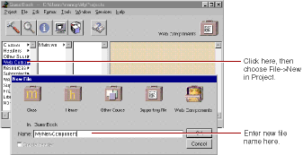
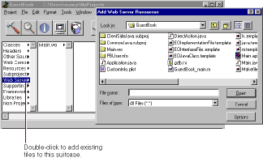

PATH
Documentation > WebObjects 4.5 >
Tools and Techniques
Adding or Deleting Items From a Project
As you work with your project, you'll use Project Builder to create new items (such as components or classes) or to add files (such as images) that you created with other programs to the project. For items in certain suitcases (such as subprojects and frameworks), there's a specific command to add them, discussed in the section about the suitcase. For other suitcases, you use the following procedures.
To create a new item of a particular kind:
-
Select the appropriate suitcase in the first column of the browser.
-
Choose File
New in Project.

The New File panel comes up with the suitcase you selected open by default.
-
Type the name of the item and click OK.
The new item is added to your project.
To add an existing item (for example, a component, a framework, or a source file) to a suitcase, first select the suitcase in the first column of the browser. Then either:
-
Double-click the suitcase.
-
Double-click the suitcase icon at the top right of the browser window.
-
Choose Project
Add Files.
A panel called Add SuitcaseName
appears, allowing you to find an item to add to the suitcase.

In addition, you can drag a file directly onto the suitcase icon in the browser, and the file is copied into the project and added to the suitcase.
To delete items from a project:
-
Select one or more items in the browser.
-
Choose Project
Remove Files.
A panel appears, giving you the option of removing the files from the project only or from the disk as well.
© 1999 Apple Computer, Inc. – (Last Updated July 27 99)